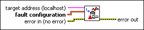

Set Fault Configuration VI
Owning Palette: Fault Configuration VIs
Requires: Base Development System (Real-Time, Windows)
Applies a custom fault configuration for a configurable fault.
If the fault code you specify does not correspond to a configurable fault, this VI returns an error.

 Add to the block diagram Add to the block diagram |
 Find on the palette Find on the palette |